Task01Week
🎯TaskWeek01
🧪1.图文并茂解释开源协定的区别？
开源（GPL、BSD、Apache和双授协议的区别）
开源的协议大致分为六种：GPL,LGPL,BSD,MIT,Apache等。
关于开源，今天大家估计，耳熟能详到习以为然，但是这个概念大概可以延续到个世纪RadHat和CentOS之家的角逐，RadHat是Linux为编译降低门槛让更多的程序员使用的开行版的其中一个版本，当时几乎一家独大，他们收取巨大的金额为购买的客户提供代码售后的服务，但是在每次完善修复的时候只提供为厂家源码，而这些源码对于技术人的门极高，就算有看得到的程序员也无法修改，为此，赚取了大量的服务费用。但是，很大社区的程序员觉得这是一种技术垄断，咬牙看不下去了，自觉形成社区，利用下班时间写写代码，编写了供商业免费开源使用的CentOS和RadHat抗衡，但是购买RadHat的厂家一般为实力强大的金主爸爸，不差钱，买的不是技术而是维修质量的售后服务，于是开源代码和工具只能运用于非传统行业，资金上差钱和差点意思的互联网公司。
但是，开源之站并没有结束。企业开源的收入来源于开源代码的募捐和社区人员使用后有志之士提供的Bug解决方案，越是权威有名气的公司，使用的人数越多，捐募的金额也就越大，使用的人数越多，系统完善的程度便越完整。于是便制定了开源的协议。
GPI：General Public License,是一种保证共享和修改的协议。这是最为著名的开源协议，因其制定的初心是保护开源的代码版权不受侵害，但是反其道被自身蚕食，但凡源码有一点GPI协议便定义为开源代码，而很大公司的业务是保密的，一旦开源便无商业机密可言，使得许多公司避GPI而不及。
于是，后面便对开源的定义放宽看要求，如BCD和Apache协议，但是大家对开源的代码还是持非常谨慎的态度。
直到现在，开源代码的协议得到基本的完善，有“双授协议”，一部分开源，一部分涉及商业机密的则不开源，让企业既可以利用开源代码让更多人使用，也保全了公司的整体利益。
开源许可证GPL、BSD、MIT、Mozilla、Apache和LGPL的区别
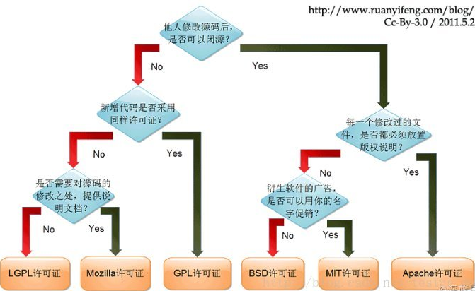
🥏2.安装centos ubuntu系统
CentOS 7安装配置
- VM/新建虚拟机/典型安装/ 稍后安装操作系统/Linux 选择64对应版本号/新建文件夹
- 磁盘大小一般设置200G，选择将虚拟磁盘转为单个文件，如下图所示：
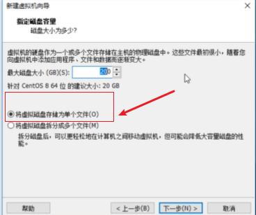
- 虚拟机硬件设置：内存2G，处理器2颗，硬盘200G，选择下载好的iso镜像，如下图所示：
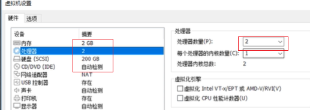
- 网络链接设置：VM/编辑/NAT模式/管理员设置/设置“子网”/点击DHCP设置/修改起始IP地址，如下图所示：
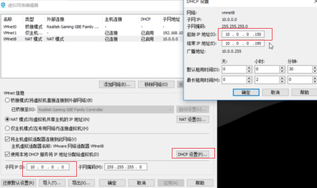
- 开启虚拟机/选择第二项，回车（校正ios镜像哈希值）
- 选择语言
- 选择时区——shanghai
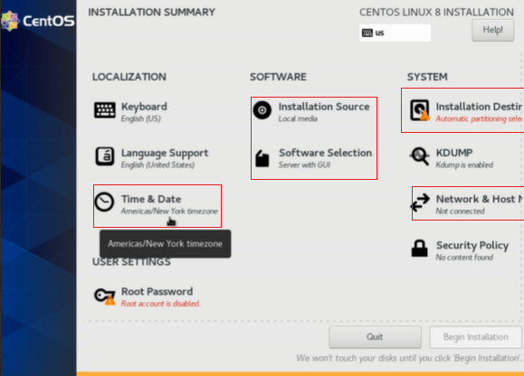
- 选择界面，Server with GUI （带图形界面），Minimal Innstall（默认），如下图所示：
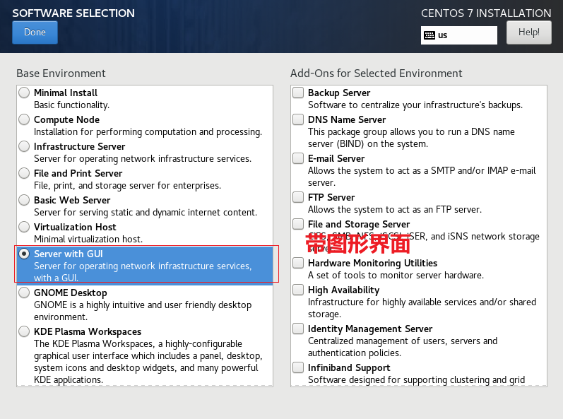
- 选择自动设置，如图所示：
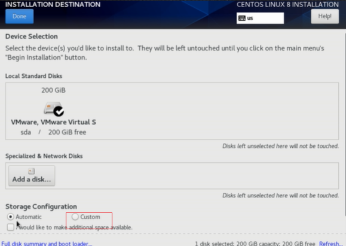
- 硬盘参数设置，选择Standard Partition（/100G，/boot 1G ，/data 50G ， swap 2G/centos8 4G），ext4/)
- 网络设置：打开网络/确认是否链接地址/修改设备昵称，如下图所示：
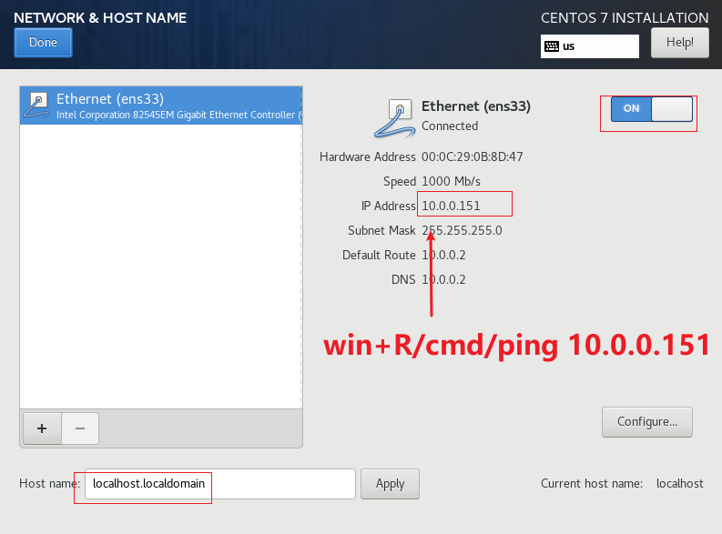
- 设置用户名和密码，如下图所示：
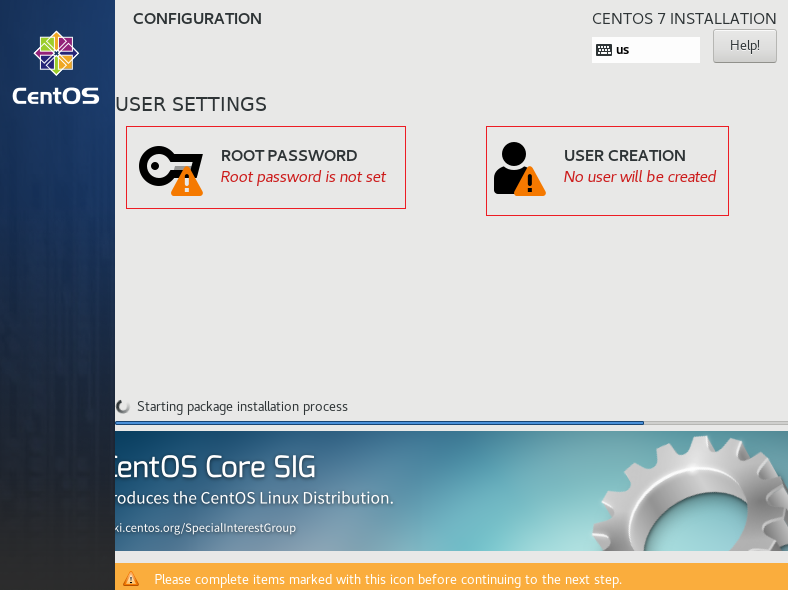
（以上内容为本人旧博客内容：CentOS 7安装与设置 - 林清|Julien - 博客园 (cnblogs.com)）
🧢3.ifconfig VS ip addr list 查询ip地址
ifconfig VS ip addr list 区别？
两者都是用来查询linux网络配置的内部命令，唯一区别是：你会发现在一些centos或者unubtu版本使用”ifconfig”命令并不能生效，原因是”ifconfig”是最早的命令，而随着软件的更新迭代，一些软件已经放弃了使用”ifconfig”这辆”老爷车”，而只支持”ip addr list”的新能电动源车。
ifconfig
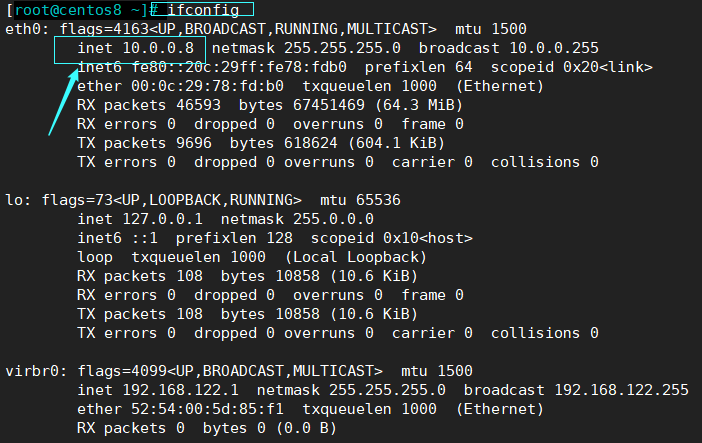
而"ip addr list"太啰嗦，使用率又高，于是可以直接缩写为"ip a l"，具体内容如下图所示：
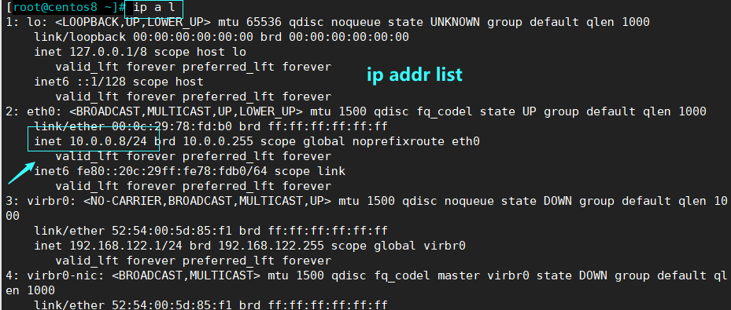
🧣4.Linux FHS结构
Linux FHS结构：Filesystem Hierarchy Standard（FHS，文件系统层次化标准）标准。
说人话便是：Linxu的标准目录结构。
why FHS？FHS的诞生解决了什么问题？
Linxu的标准目录结构，奥卡姆剃刀原则：如无必要，则无新添，Linux FHS 产生是解决了文件规范问题，让Linux文件标准化。因为Linux是一款以”自由”为核心的软件，早期大家使用Linux都DIY自己设置自己的Linux目录结构，但是这样会产生很大的问题，于是Linux便出出台了目录的标准，将目录结构文件分类且规范了，更加易于使用者的操作和文件配置。
what is FHS？
Linux目录结构，如下图所示：
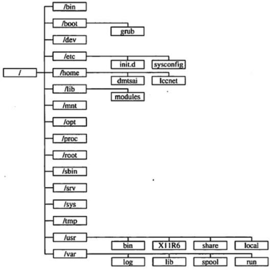
而这个目录结构也深刻体现了Linux的哲学思想：
- 一切皆为文件
- 一个程序只做一件事情
- 避免和用户进行交互
- 文件都以文本的存储和配置
结合设计者对Linux的设计理念便可分析Linux 的目录结构：
- 一个程序只做一件事情
- bin — 系统启动时需要的执行文件（二进制）
- sbin — 可执行程序的目录，但大多存放涉及系统管理的命令，只有root权限才能执行
- proc — 虚拟，存在linux内核镜像
- 在Linux中，可以理解为有user和root管理者，而被管理的Linux仓库又分为”临时仓库”和”固定仓库”
- 管理者
- user
- root
- 临时仓库
- tmp — 临时文件目录，系统启动后的临时文件存放在/var/tmp
- mnt — 临时用于挂载文件系统的地方
- 固定仓库
- lib — 根文件系统目录下程序和核心模块的公共库（grub）
- boot — 引导加载器所需文件，系统所需图片保存于此
- dev — 设备文件目录
- etc — 配置文件
- home — 存储普通用户的个人文件
- 管理者
其中文件又分为两大类，如下图所示：
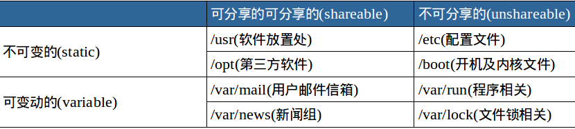
【参考文档】
本博客所有文章除特别声明外，均采用 CC BY-SA 4.0 协议 ，转载请注明出处！